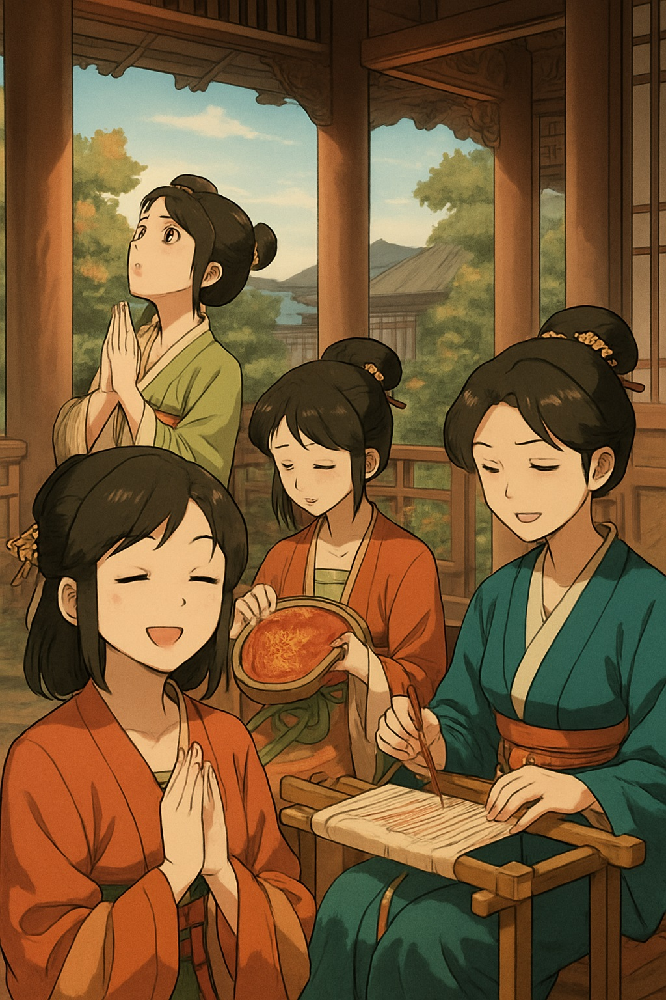
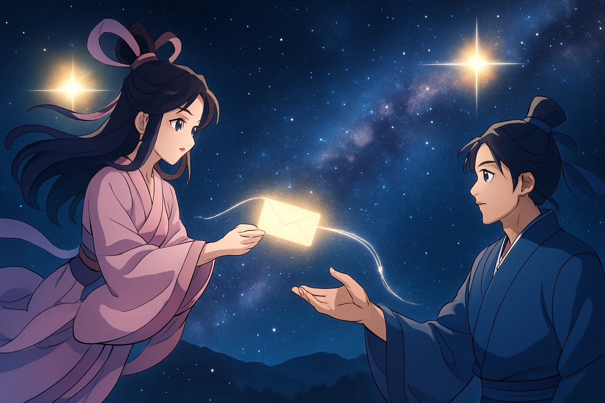
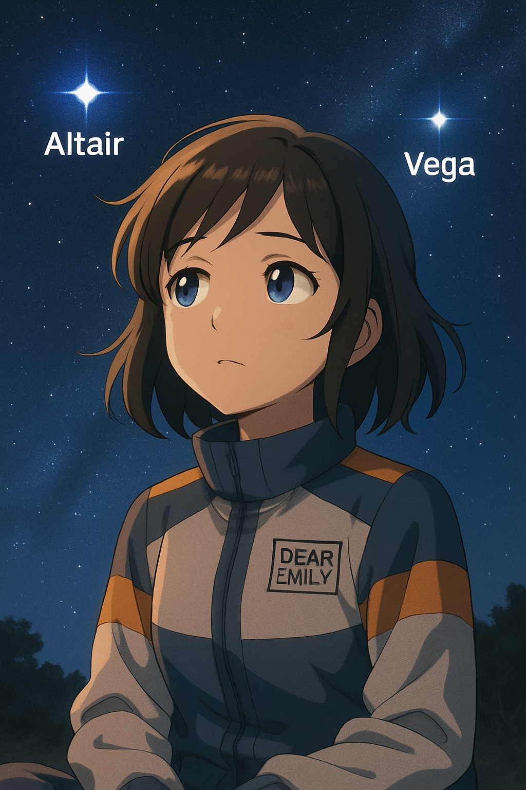

🌌織姫と彦星の本当の願い 〜七夕と宇宙の祈り〜

夜の帳（とばり）が静かに降りて、街の灯りがひとつ、またひとつと消えていく。
エミリーは、屋上のベンチに腰かけ、胸の前でそっと手を合わせた。
その視線の先には、細くきらめく天の川が、空の真ん中を横切っていた。
──どうして、私たちは星に願いごとをするんだろう？
七夕の夜。
幼いころに書いた短冊は、ただの遊びだったかもしれない。
けれど今夜、ふと湧き上がるこの問いに、エミリーは耳を澄ませていた。
ポケットから取り出したのは、一冊の古びた星図帳。
「乞巧奠（きこうでん）」、聞きなれない言葉の横に、「女性たちが手芸の上達を祈った儀式」とある。
「星って、願いを叶える存在なんじゃなくて、もっと奥深い“祈りの象徴”だったんだ…」
そのとき、風が吹き抜け、どこか懐かしい香りがした。
短冊が揺れ、エミリーはそっと目を閉じる。
──宇宙と祈りをめぐる、時空の旅が始まった。
② 七夕のはじまり｜祈りと星の物語
エミリーが最初に辿り着いたのは、古代中国の宮廷。
煌びやかな衣を纏った女性たちが、七月七日の夜、庭先に小さな祭壇を設けて、針や糸を並べている。
「これは“乞巧奠”といって、織姫に“技芸の上達”を願う夜なのよ」
そう囁いたのは、宮女のひとりだった。
星は、ただ美しいだけではない。人間の努力と成長を導く存在でもあった。
やがて日本に伝わると、その風習は「棚機津女（たなばたつめ）」という神聖な巫女の信仰と重なった。
乙女が清流のほとりで神に捧げる布を織る──それが、“清め”と“祈り”の行事となったのだ。
「七夕は、女性の手仕事の願いだけじゃなく、心を清めて神様に近づく“浄化の夜”だったんだ…」
と、エミリーはノートに書き記した。
星に願うという行為は、自分自身の“奥深く”と向き合うこと。
それはただのお願いではなく、「心を整える儀式」だったのだ。
③ 星の正体｜ベガとアルタイルのほんとうの距離
夜空に輝く2つの星──織姫星ベガと、彦星アルタイル。
夏の大三角を形づくるこの星たちは、七夕伝説の主人公として有名だが、本当はどんな星なのか？
エミリーは再び現代に戻り、プラネタリウムの解説を聞いていた。
「ベガまでの距離はおよそ25光年。アルタイルは約16光年。つまり、私たちが見ているのは、それだけ昔の光なんですね」
「じゃあ、今夜見えるベガは、私が生まれた頃の光かも…」
そうつぶやいたエミリーの胸に、時空を越える“光の手紙”というイメージが浮かぶ。
ベガとアルタイルは、七夕伝説のように“年に一度だけ会える”わけではない。
実際にはどちらも恒星で、それぞれが太陽のように輝きながら宇宙空間を旅している。
けれど、その距離があるからこそ──その想いの遠さがあるからこそ、
星に託された“会いたいという祈り”は、私たちの心に響くのだろう。
「星って、届かないからこそ、心を向ける価値があるんだね」
④ エミリーの気づき｜本当の願いとは？

短冊に「願いごと」を書く。
けれど、ただ“叶いますように”と書くのは、どこか空虚だった。
ある本で、エミリーはこんな言葉に出会った。
「本当の願いは、自分の中の“星”に気づくこと」
その言葉に導かれ、エミリーは小さく目を閉じた。
深呼吸とともに、心の中のざわめきが静まっていく。
──「私は、なにを願いたいんだろう？」
それは誰かに評価されることでも、すぐに叶うことでもなかった。
自分の奥底に眠っていた、光のような想い。
「私は、“私であること”を願いたい。小さな祈りでもいい、自分の言葉で書きたい──」
その夜、エミリーは、風に揺れる短冊に
「ありのままで、誰かを照らす光になれますように」と記した。
⑤ 実践と導線｜祈りをかたちにする方法
七夕の夜に、自分の願いと向き合う時間をもつこと。
それは、季節と心をつなげる美しい儀式でもある。
エミリーが試したのは、たった3分の「願いごと瞑想」。
🌟七夕瞑想ワーク｜星に願いを託す方法
- 静かな場所で目を閉じる
- 1年前の自分を思い浮かべる
- そこから今までにあった「変化」や「頑張ったこと」に光を当てる
- 今の自分が、なにを願いたいのかを感じる
- それを、短冊やノートに書く
📩PDF配布中：『星と向き合う願いごとノート』
- 自分と向き合う問い7選
- ベガとアルタイルの星図つき
⑥ エピローグ｜空と心を結ぶ夜に
夜空を見上げると、ふたつの星が微かにきらめいていた。
距離はあっても、想いは届く──そう信じたくなる光。
エミリーは、七夕を通して気づいた。
願いごととは、自分自身の中心に戻るための“星の儀式”なのだと。
今夜も、誰かが空を見上げ、心の奥の祈りに耳を澄ませている。
きっと、それこそが、織姫と彦星が伝えたかった「本当の願い」なのかもしれない。
🎁関連アイテム紹介


📝編集後記 by Emily

季節と星と心が交差するこの夜。
ひとときでも、あなたの祈りが星に触れますように。
また、次の季節の空でお会いしましょう──